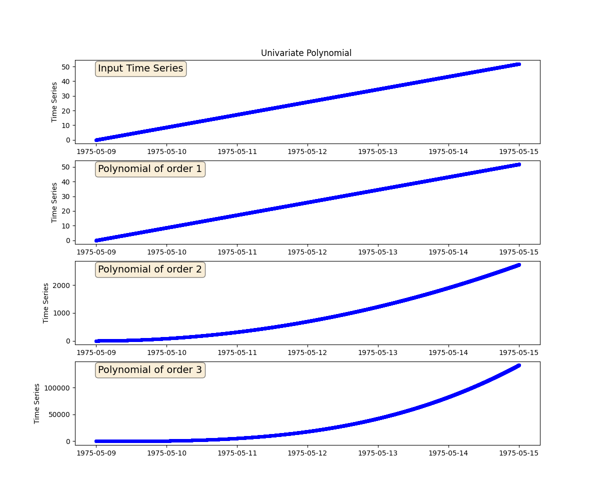

Note
Go to the end to download the full example code.
Univariate Polynomial
We will generate three univariate polynomials of a given time series. The order of the polynomials will be 1, 2 and 3, respectively.
import matplotlib.pyplot as plt
import pandas as pd
from indsl.signals.generator import line
from indsl.signals.polynomial import univariate_polynomial
start = pd.Timestamp("1975/05/09")
end = pd.Timestamp("1975/05/15")
# Create a time series
data = line(start_date=start, end_date=end, slope=1e-4, intercept=0)
coefficients_1 = [0, 1]
coefficients_2 = [0, 1, 1]
coefficients_3 = [0, 1, 1, 1]
fig, (ax1, ax2, ax3, ax4) = plt.subplots(4, 1, figsize=(12, 10))
props = dict(boxstyle="round", facecolor="wheat", alpha=0.5)
ax1.plot(data, "bo", mec="b", markerfacecolor="None", markersize=4)
ax1.text(
0.05,
0.95,
"Input Time Series",
transform=ax1.transAxes,
fontsize=14,
verticalalignment="top",
bbox=props,
)
ax1.set_ylabel("Time Series")
ax1.set_title("Univariate Polynomial ")
ax2.plot(univariate_polynomial(data, coefficients_1), "bo", mec="b", markerfacecolor="None", markersize=4)
ax2.text(
0.05,
0.95,
"Polynomial of order 1",
transform=ax2.transAxes,
fontsize=14,
verticalalignment="top",
bbox=props,
)
ax2.set_ylabel("Time Series")
ax3.plot(univariate_polynomial(data, coefficients_2), "bo", mec="b", markerfacecolor="None", markersize=4)
ax3.text(
0.05,
0.95,
"Polynomial of order 2",
transform=ax3.transAxes,
fontsize=14,
verticalalignment="top",
bbox=props,
)
ax3.set_ylabel("Time Series")
ax4.plot(univariate_polynomial(data, coefficients_3), "bo", mec="b", markerfacecolor="None", markersize=4)
ax4.text(
0.05,
0.95,
"Polynomial of order 3",
transform=ax4.transAxes,
fontsize=14,
verticalalignment="top",
bbox=props,
)
ax4.set_ylabel("Time Series")
plt.show()
Total running time of the script: (0 minutes 0.362 seconds)